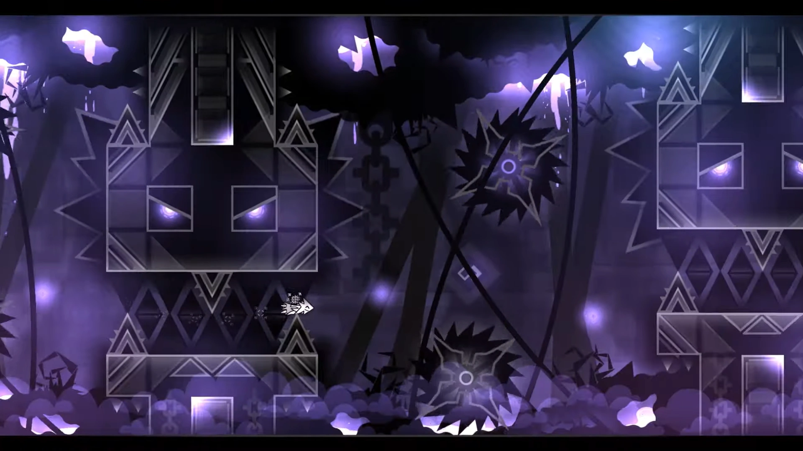

SILENT CLUBSTEP

vidéo du niveau |
"Silent clubstep is a 1.8/1.9/2.1 former impossible solo Extreme Demon created, hack-verified and published by Sailent. It is a silent-level remake of the main level Clubstep and one of the most famous levels in Geometry Dash history due to the old version of it being previously deemed humanly impossible by many players. Due to its name and status as a 'Silent' level, it is most likely inspired by Silent Club." |
